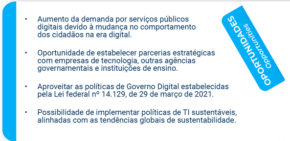
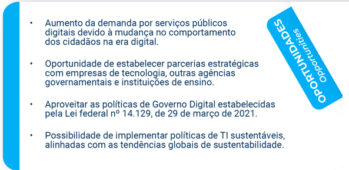

GOVERNO DO ESTADO DE TOCANTINS
Agência de Tecnologia da Informação - ATI
www.to.gov.br/ati- Wanderlei Barbosa
- Governador do Estado do Tocantins
- Alírio Felix Martins Barros
- Presidente da ATI
- Adams Cirino Gregório
- Vice-Presidente Executivo da ATI
- Cristina Pereira de Oliveira
- Superintendente de Gestão e Governança em TI da ATI
- Hiram Melchiades Torres Gomes Sobrinho
- Superintendente de Infraestrutura e Serviços de TI da ATI
- Marinaldo Oliveira Santos
- Superintendente de Sistemas de Informação da ATI
- Miguel Carlos Chaves Júnior
- Diretor de Administração e Finanças da ATI
- Tocantins, 2024
- © Todos os Direitos Reservados
Apresentação
O Plano Estratégico e Diretor de Tecnologia da Informação e Comunicação – PEDTIC é o instrumento que permite nortear e acompanhar a atuação da área de Tecnologia da Informação e Comunicação (TIC), definindo estratégias e o plano de ação para implantá-las. Ele atua como importante ferramenta de apoio à tomada de decisão para o gestor, habilitando-o a agir proativamente, contra as ameaças e a favor das oportunidades.
Esse documento representa um instrumento de gestão para a execução das ações de TIC da ATI/TO, possibilitando justificar os recursos aplicados em TI, minimizar o desperdício, garantir o controle, aplicar recursos naquilo que é considerado mais relevante e, por fim, melhorar os gastos públicos e os serviços prestados ao cidadão.
O Período de vigência deste documento é de quatro anos, com início em janeiro de 2024 e término em dezembro de 2027. O PEDTIC não é um documento imutável, pelo contrário, ele é um instrumento vivo que dever ser revisado, pelo menos, uma vez por ano, mas que pode sofrer alterações a qualquer momento, sempre que houver conveniência de alinhar as necessidades das áreas da ATI aos objetivos estratégicos

Metodologia
Utilizando como base a metodologia proposta no Guia de PDTIC do SISP1 e adaptando-a às necessidades da ATI/TO, foram definidos os seguintes passos para a elaboração do PEDTIC:


Analise SWOT
A análise ambiental pode ser utilizada para ponderar a situação atual da organização, para propor melhorias. Para tanto, utilizou-se a matriz SWOT, em que foram diagnosticadas as forças, oportunidades, fraquezas e ameaças, tanto no ambiente interno quanto no ambiente externo à ATI/TO.
 



1. Necessidades de Informação
- Você sente falta de alguma informação que auxiliaria no trabalho diário? Que informações seriam estas?
- Você percebe alguma informação que deveria ser provida ao cidadão e não está sendo? Qual?
- Há informações que poderiam ser divulgadas eletronicamente para o cidadão? Quais?
- Há alguma necessidade de mudança no nível de segurança de alguma informação? Qual?
2. Necessidades de Serviços de TIC
- As necessidades de informações já estão contempladas pelos serviços existentes? Quais estão faltando?
- Você percebe a necessidade de criação de algum serviço? Qual?
- Existem serviços que não são mais utilizados e poderiam ser eliminados? Quais?
- Há necessidades relacionadas ao provimento de serviços ao cidadão? Quais?
3. Necessidades de Sistemas Computacionais
- Quais sistemas estão em uso atualmente? Há um catálogo de sistemas que possa ser compartilhado? Onde?
- Há demanda conhecida para melhoria dos sistemas atuais? Esta demanda está documentada? Onde?
- Há demanda para novos sistemas? Quais?
- Como está o nível de satisfação dos usuários com os sistemas atuais? Isso está documentado/organizado? Onde?
4. Necessidades de Infraestrutura de TIC
- Quais recursos tecnológicos e de comunicação estão atualmente em uso? Há um catálogo que possa ser compartilhado? Onde?
- A infraestrutura atual atende os serviços existentes?
- A infraestrutura atual será suficiente para atender os possíveis novos serviços?
- Há necessidade de adequação em função das mudanças tecnológicas provocadas por oportunidades de uso de novas tecnologias?
- Há necessidade de definir ações para evitar ou mitigar riscos de obsolescência, descontinuidade, falhas técnicas etc.?
- Há necessidades relacionadas aos recursos de armazenamento de dados? Quais?
5. Necessidades de Contratação de TIC
- Há necessidade de manutenção e contratação de soluções em TIC para atender às novas demandas?
- A política de contratação de soluções de TIC existe? É formalizada? Está conforme a legislação vigente?
- Há necessidade de contratação de serviços de TIC (terceirização)?
- Há necessidade de aquisição de bens de TIC?
6. Necessidades de Pessoal de TIC
- Há necessidade de pessoal de TIC para atender às novas demandas?
- A política e os processos de pessoal de TIC existem? Estão formalizados? Há necessidade de melhoria?
- O mapeamento de competências existe?
- Há necessidades de aumento, redução ou realocação de pessoal de TIC, em função dos processos de TIC, e segundo os estudos das respectivas áreas?

Referencial Estratégico
Missão A razão de ser e identidade da organização
Promover a modernização, a inovação e a transformação digital dos serviços públicos, através do uso eficiente, sustentável e seguro da tecnologia da informação, contribuindo para o desenvolvimento do Estado do Tocantins, garantindo o acesso às informações governamentais para a sociedade.
Visão A apresenta onde se pretende estar no futuro
A apresenta onde se pretende estar no futuro
Consolidar o Tocantins como um estado digital, humano, sustentável e inclusivo.
Valores Princípios que guiam a organização
Inovação:
Estimular a busca constante por novas soluções e melhorias em tecnologia da informação, incentivando a criatividade, colaboração e compartilhamento de conhecimento.
Eficiência:
Otimizar processos e recursos, garantindo governança, qualidade e agilidade na entrega de serviços de tecnologia da informação, com foco nas necessidades dos órgãos públicos e da sociedade.
Integridade:
Agir com ética, transparência e responsabilidade na gestão de recursos e informações, preservando a segurança e confidencialidade dos dados.
Colaboração:
Estabelecer parcerias e cooperação entre os órgãos constituintes e a sociedade organizada para compartilhar conhecimento, recursos e soluções, promovendo sinergia e desenvolvimento.
Comprometimento:
Atuar de forma proativa e engajada com os objetivos do Governo Estadual, buscando excelência no desempenho das atividades e na geração de valor.
Foco no usuário:
Priorizar o atendimento às necessidades e expectativas dos usuários dos serviços públicos digitais, assegurando inclusão, acessibilidade, usabilidade e satisfação.
Sustentabilidade:
Promover a gestão sustentável de recursos e processos, contribuindo para o desenvolvimento social, econômico e ambiental do Estado do Tocantins.
Integração:
Incentivar a cooperação e a colaboração entre os diferentes órgãos e entidades da Administração Pública, buscando harmonizar e unificar sistemas e processos.
Objetivos Estratégicos
Os objetivos estratégicos representam os resultados que a ATI/TO planeja alcançar para atender à missão da instituição e a visão estabelecida. Abaixo é apresentado o mapa estratégico elaborado para a ATI/TO e revisado doravante a construção dos Planos de Ação e estabelecimento de metas

Plano de Ações, Metas e Responsabilidades
O Plano de Ações e Metas foi desenvolvido a partir do levantamento das necessidades da ATI/TO e considerando as boas práticas de governança, planejamento e prestação de serviços de TIC recomendadas pelo governo.
Para cada objetivo estratégico foram definidos resultados-chave que devem ser alcançados em período pré-definido. Para a mediação destes resultados, são descritas fórmulas de cálculo e a origem das informações que precisam ser coletadas.
Foram listadas Ações Estratégicas que são tarefas que deverão ser executadas ao longo dos quatro anos de vigência deste PEDTIC conforme as metas pré-estabelecidas. Embora muitas vezes a realização das Ações seja fruto de um trabalho colaborativo, é de extrema importância que cada uma tenha o seu responsável.
Sociedade
Transformação Digital
Resultados-Chave
- Digitalizar 100% os serviços elegíveis à Transformação Digital em 4 anos.
- Traduzir 100% os serviços do Portal de Serviços para Linguagem Simples em 4 anos.
Fórmula de Cálculo do Resultado-Chave
- (Quantidade de serviços digitalizados) / (Quantidade total de serviços aptos para a digitalização no Portal de Serviços) * 100
- (Quantidade de serviços revisados) / (Quantidade total de serviços na Carta de Serviços) * 100
Origem das Informações
- Portal de Serviços

Sustentabilidade
Resultados-Chave
- Descartar mais de 70% dos equipamentos inservíveis de TI da ATI ao ano, por meio de instituições.
Fórmula de Cálculo do Resultado-Chave
- (Unidades de equipamentos descartadas por meio de instituições) / (Unidades de equipamentos aptas a descartar) * 100
Origem das Informações
- É preciso estabelecer uma forma padrão para contagem dos equipamentos descartados e inservíveis, podendo considerar, por exemplo, equipamentos com mais de 5 anos de uso.
Processos Internos
Infraestrutura Tecnológica
Resultados-Chave
- Monitorar efetivamente 100% dos ativos de infraestrutura de TI necessários para manter os sistemas estruturantes em 4 anos.
Fórmula de Cálculo do Resultado-Chave
- (Quantidade de ativos monitorados) / (Quantidade de ativos necessários para manter os sistemas estruturantes) * 100
Origem das Informações
- Inventário. É preciso estabelecer uma forma padrão para contagem dos ativos monitorados e realizar um inventário dos ativos necessários para manter os sistemas estruturantes
Segurança de Dados
Resultados-Chave
- Mitigar 100% dos riscos identificados no quadrimestre.
- Corrigir 100% dos incidentes acontecidos no quadrimestre.
Fórmula de Cálculo do Resultado-Chave
- (Quantidade de riscos resolvidos) / (Quantidade de riscos identificados) * 100
- (Quantidade de incidentes resolvidos) / (Quantidade de incidentes identificados) * 100
Origem das Informações
- RISI - Relatório de Incidente. É preciso estabelecer uma forma padrão para contagem e registro dos riscos e incidentes.

Integração de Sistemas
Resultados-Chave
- Disponibilizar 100% dos serviços na solução de interoperabilidade em 4 anos.
Fórmula de Cálculo do Resultado-Chave
- (Quantidade de serviços disponibilizados na solução de interoperabilidade) / (Quantidade de serviços possíveis de serem interoperados) * 100
Origem das Informações
- É preciso realizar o inventário da quantidade de serviços possíveis de serem interoperados.

Gestão e Governança Organizacional
Resultados-Chave
- Revisar 100% dos processos de negócio, já modelados, em 2 anos.
Fórmula de Cálculo do Resultado-Chave
- (Quantidade de modelos de processos revisados) / (Quantidade total de processos modelados) * 100
Origem das Informações
- Base de processos na ferramenta oficial para modelagem.

Aprendizado e Crescimento
Capacitação
Resultados-Chave
- Ter adesão de 50% dos colaboradores ao programa de capacitação por ano.
Fórmula de Cálculo do Resultado-Chave
- (Quantidade de colaboradores que participaram do programa de capacitação) / (Quantidade total de colaboradores da ATI-TO) * 100
Origem das Informações
- É preciso manter um registro dos colaboradores que participaram do programa de capacitação.
Inovação
Resultados-Chave
- Ter profissional alocado para atuar com foco em inovação em 2024.
Ambiente Organizacional
Resultados-Chave
- Manter o Índice de Satisfação dos colaboradores em 60%.
Fórmula de Cálculo do Resultado-Chave
- Cálculo do Índice de Satisfação dos colaboradores.
Origem das Informações
- Pesquisa de satisfação a ser realizada anualmente.

Matriz de Riscos
Em quaisquer projetos, podem ocorrer fatos imprevisíveis que se constituam em fatores de atraso em seu curso normal. O Plano de Gestão de Riscos identifica e trata esses fatos que podem afetar a execução das metas e ações planejadas neste PEDTIC, considerando os critérios de nível de impacto e probabilidade de ocorrência.
Listagem dos Riscos
A seguir são apresentados os riscos identificados no contexto deste PEDTIC, com a indicação de probabilidade de ocorrência, o impacto gerado caso aconteça e as ações sugeridas para evitar minimizar tanto a ocorrência quanto o impacto.
Esta informação é apresentada também de forma tabular em um dos documentos anexos a este PEDTIC.
Não atendimento da LGPD
Probabilidade do Risco
Praticamente certo
Impacto do Risco
Muito alto
Plano de Mitigação
- Treinamento sobre os princípios e requisitos da LGPD, focando na importância da proteção de dados pessoais.
- Construção de um inventário completo dos dados pessoais coletados, armazenados, processados e compartilhados pela organização.
- Criação/revisão de política de privacidade para refletir os requisitos da LGPD, garantindo que ela seja clara e acessível.
- Criação de um comitê de privacidade para monitorar, revisar e melhorar continuamente as práticas de proteção de dados da organização.
- Revisão de contratos com fornecedores e parceiros para garantir que eles também estejam conforme a LGPD e tenham medidas adequadas de proteção de dados.
- Implantação de ferramenta para atendimento à LGPD.
Capacidade produtiva baixa por falta de força de trabalho com formação adequada
Probabilidade do Risco
Praticamente certo
Impacto do Risco
Alto
Plano de Mitigação
- Identificação das habilidades e qualificações necessárias para atender às demandas produtivas da organização.
- Melhoria dos processos de recrutamento para atrair candidatos qualificados, utilizando descrições de trabalho precisas, campanhas de recrutamento direcionadas e plataformas de recrutamento eficazes.
- Desenvolvimento e implementação de programas de treinamento contínuo para atualizar as habilidades dos funcionários atuais e prepará-los para novas responsabilidades.
- Incentivar o aprendizado no local de trabalho por meio de mentorias, job rotations e treinamentos on-the-job.
- Colaboração com instituições de ensino para desenvolver currículos que atendam às necessidades da organização.
- Considerar a terceirização de determinadas funções ou a contratação de freelancers para preencher lacunas temporárias ou especializadas.
Mudanças no cenário político
Probabilidade do Risco
Praticamente certo
Impacto do Risco
Alto
Plano de Mitigação
- Realização de revisões periódicas do PEDTIC.
- Desenvolvimento de planos de contingência detalhados para diferentes cenários políticos. Estes planos devem incluir ações específicas que a organização pode tomar em resposta a mudanças políticas adversas.
Indisponibilidade de sistema por defeito em equipamentos
Probabilidade do Risco
Provável
Impacto do Risco
Muito alto
Plano de Mitigação
- Renovação do parque tecnológico (servidores e equipamentos de comunicação).
- Adequação do parque tecnológico quanto à redundância.
Ocorrência de ataques por meio de credenciais de um usuário sem conhecimento em segurança da informação
Probabilidade do Risco
Provável
Impacto do Risco
Muito alto
Plano de Mitigação
- Capacitação obrigatória dos usuários em segurança da informação.
- Conhecimento e aceite da política de segurança por parte dos usuários.
- Aquisições e contratações de soluções de segurança.
Despesas desnecessárias em razão do uso de sistemas de informação programados em linguagem obsoleta, a, com dificuldade de evolução, suporte e manutenção
Probabilidade do Risco
Praticamente certo
Impacto do Risco
Médio
Plano de Mitigação
- Análise detalhada dos sistemas atuais para identificar os problemas específicos relacionados à linguagem obsoleta, incluindo desempenho, segurança e capacidade de suporte
- senvolvimento de um plano estratégico de migração que inclua uma análise de custo-benefício para atualizar ou substituir os sistemas obsoletos.
- Migração para uma arquitetura de micro serviços, que permite maior flexibilidade e facilita a atualização de partes específicas do sistema sem a necessidade de revisar toda a base de código.
- Estabelecimento de um processo de governança aliado a consultores ou empresas especializadas na migração e modernização de sistemas legados.
Alta rotatividade de gestores e colaboradores
Probabilidade do Risco
Praticamente certo
Impacto do Risco
Médio
Plano de Mitigação
- Realização de ações para motivação e capacitação de gestores e colaboradores.
- Implementação de soluções de transferência e retenção de conhecimento.
- Desenvolvimento de um programa de integração abrangente que ajude novos funcionários a se familiarizarem com a cultura da empresa, suas responsabilidades e os recursos disponíveis.
- Criação de opções de trabalho flexíveis, como horários flexíveis, teletrabalho e tempo parcial, para auxiliar os funcionários a equilibrar suas responsabilidades pessoais e profissionais.
- Criação de um ambiente de trabalho inclusivo e acolhedor, onde todos os funcionários se sintam valorizados e respeitados.
Ocorrência de ataque cibernético de larga escala
Probabilidade do Risco
Possível
Impacto do Risco
Muito alto
Plano de Mitigação
- Aquisição de equipamentos e serviços de segurança.
- Realização de testes de penetração periodicamente.
- Conscientização dos servidores no uso do ambiente corporativo.
Demandas urgentes não previstas no PEDTIC
Probabilidade do Risco
Provável
Impacto do Risco
Médio
Plano de Mitigação
- Realização de revisões periódicas do PEDTIC.
- Divulgação periódica do PEDTIC e suas atualizações.
Baixa maturidade em governança de TIC
Probabilidade do Risco
Provável
Impacto do Risco
Médio
Plano de Mitigação
- Capacitação de servidores nos principais frameworks de mercado.
- Aquisição de soluções de apoio técnico especializado.
Infraestrutura tecnológica inadequada ou insuficiente
Probabilidade do Risco
Possível
Impacto do Risco
Alto
Plano de Mitigação
- Implementação de plano de monitoramento permanente.
- Adoção de serviços de computação em nuvem.
- Reserva orçamentária adequada para aquisição de equipamentos.
Planejamento estratégico não efetivo
Probabilidade do Risco
Possível
Impacto do Risco
Alto
Plano de Mitigação
- Engajamento dos colaboradores no planejamento.
- Definição de metas e indicadores factíveis.
Aquisições ou contratações não concluídas em tempo hábil
Probabilidade do Risco
Possível
Impacto do Risco
Médio
Plano de Mitigação
- Aperfeiçoamento do processo de contratação e aquisições.
Indisponibilidade de serviços por uso de tecnologia defasada
Probabilidade do Risco
Improvável
Impacto do Risco
Muito alto
Plano de Mitigação
- Engajamento dos colaboradores durante o planejamento.
- Definição de metas e indicadores factíveis.
Ineficácia na comunicação com outras áreas e órgãos
Probabilidade do Risco
Possível
Impacto do Risco
Baixo
Plano de Mitigação
- Realização de reuniões para esclarecimento de dúvidas.
- Estabelecimento de canais de comunicação ágeis.
- Utilização de linguagem simples na comunicação.

Plano para Acompanhamento e Avaliação
O PEDTIC é um documento que possui caráter dinâmico, de modo que, ao longo do seu ciclo de vigência, são necessárias atualizações e revisões que deverão ser aprovadas.
O gerenciamento ativo da execução do PEDTIC contempla o acompanhamento frequente de requisitos e recursos, comparando-os ao alcance de metas estratégicas e táticas. Também é necessário avaliar se os benefícios esperados estão sendo atingidos para que sejam tomadas ações apropriadas em caso de desvios.
O acompanhamento contínuo das ações e o monitoramento de indicadores de resultados permite que o PEDTIC se mantenha vivo e tenha seus efeitos sentidos por todos os envolvidos.
Como instrumento de gestão, propõe-se a revisão anual do PEDTIC em função dos recursos financeiros e de pessoal disponível. Propõe-se ainda monitoramento e atualização quadrimestral das ações do PEDTIC, conforme descrito a seguir:
- Detalhar planos de ações para contemplar as ações a serem realizadas no quadrimestre.
- Medir o percentual de conclusão das ações no ano comparando-as com a meta pré-estabelecida (a partir do 2º ano). Verificar também o quanto avançou no quadrimestre.
- Monitorar os resultados-chave quadrimestralmente em reuniões nas quais podem estar presentes a equipe de TI e os principais envolvidos de outras áreas caso necessário.
- Reportar os resultados quadrimestralmente através da elaboração de relatórios com o progresso das iniciativas. Estes resultados devem ser compartilhados com os gestores de TI e com envolvidos de outras áreas.
- Utilizar ferramentas de gestão de projetos para acompanhar o progresso, gerenciar tarefas e recursos.
- Criar dashboards visuais para monitorar os resultados-chave e o status dos projetos relevantes, em tempo real, facilitando a identificação de problemas e a tomada de decisões rápidas.
- Revisar e atualizar o PEDTIC, com base nos resultados do monitoramento, para refletir mudanças nas prioridades organizacionais, no ambiente de negócios ou nas tecnologias emergentes.
Considerações Finais
Para que os objetivos desejados pela adoção do atual PEDTIC sejam alcançados, alguns requisitos são vistos como críticos, de forma que a ausência de um ou de vários desses requisitos, ou mesmo sua presença de forma precária, irá gerar impacto no planejamento de TIC e, consequentemente, nos objetivos estratégicos da ATI/TO.
Alguns requisitos considerados críticos para a efetiva implantação e consequente obtenção dos resultados previstos são:
- Tornar o processo de implantação do PEDTIC um compromisso da alta direção, dos gestores e de todos os servidores da ATI/TO;
- Garantir recursos humanos, orçamentários e financeiros para a execução das ações previstas no PEDTIC;
- Realizar revisões periódicas do PEDTIC para contemplar alterações estratégicas que ocorrerem;
- Instituir uma equipe de monitoramento das ações e resultados associados ao PEDTIC;
- Controlar e acompanhar os projetos derivados do PEDTIC.